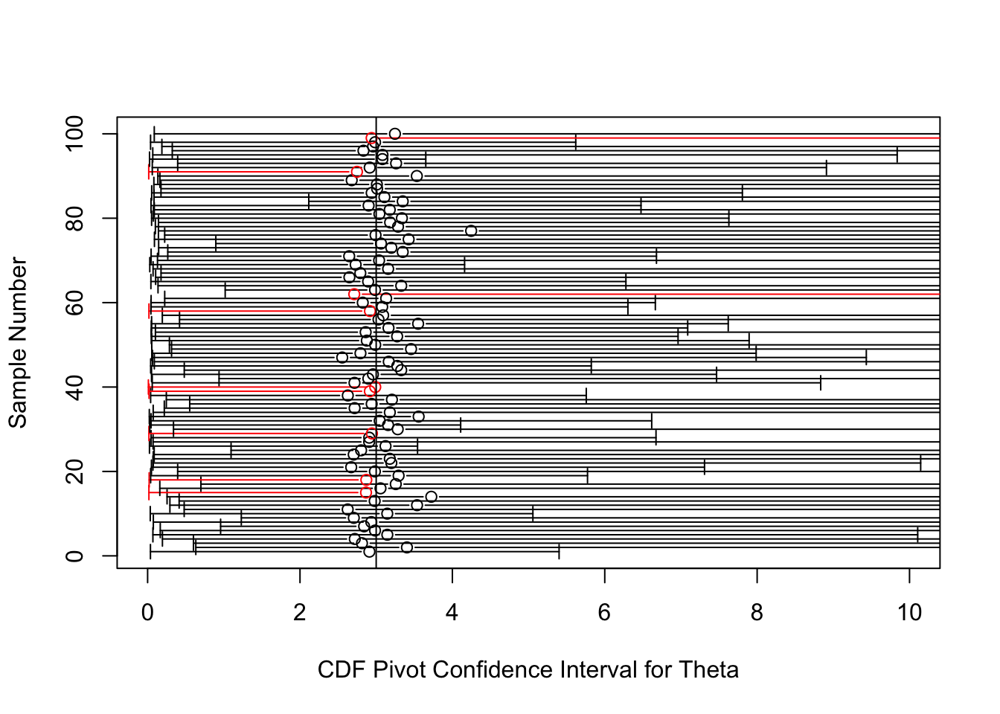

The title of this post refers to a technique for constructing confidence sets for real-valued parameters that is extremely general. The generality of the techinque came as quite the surprise to me when I first learned about it this past year in my first year Math Stat class. My surprise was that a single method could be employed to construct confidence sets in every setting (i.e. every parameterized family of distributions in which a real-valued parameter is to be targeted with a confidence set). Who knew?!
These were my thoughts upon first learning the theory behind the method. However, I realized soon thereafter that things were not so rosey, that pivoting a cdf is not some magic bullet of parametric set estimation. After all, there are two different dimensions on which we can judge a method: ease of implementation and performance of the result. To begin with the first, just because we can pivot a cdf, does not mean we will necessarilly want to. In particular, there’s a good chance we’ll have to rely on inexact computations to perform the pivot. Second, even if the method can be executed to arrive at some confidence set of a desired level, perhaps relying on a computational approximation in the process, there is no guarantee that this confidence set will be a particularly good one! We will see that the performance of the resulting confidence set depends on the statistic that we start with.
To draw a connection to my previous posts, I am here discussing parametric inference from a random sample. In this setting, we assume a specific functional form for the distribution of our data and we proceed to make inferences (perform hypothesis tests and develop estimates) about an unknown parameter in this function. In contrast, in my first two blog posts, I discuss methods of inference which rely only on an assumption of randomization, an example of non-parametric statistics.
Without further adieu, here’s the method:
Pivoting a CDF
Let \(T\) be a real-valued statistic with a continuous cdf \(F_\theta(t)\), where \(\theta\in\Theta\subset\mathbb{R}\). Let \(\alpha_1 + \alpha_2 = \alpha\) where \(\alpha_1\) and \(\alpha_2\) are non-negative and their sum \(\alpha\) is strictly between \(0\) and \(1.\) If \(F_\theta(t)\) is non-increasing in \(\theta\) for each \(t\), define
Then \([L(T), U(T)]\) is a \(1-\alpha\) confidence interval for \(\theta\).
In the case of a discrete statistic with a discontinuous CDF, the statement changes only slightly with \(\lim_{s\to t^-} F_\theta(s)\) replacing \(F_\theta(t)\) in the inequality \(F_\theta(t) \leq 1-\alpha_2\).
What’s going on here? (Pre-proof explanation)
The method can actually be viewed as a specific example of a more general strategy for constructing confidence interval, known as “pivoting”. A pivot is defined as a function of both the data and of the unknown parameters which has a distribution that does not depend on any unknown parameters. The cool thing about pivots is that they yield confidence intervals of any level through inversion! Here is some notation to go along with the idea:
Suppose \(q(X, \theta)\) is a pivot. By definition, this means that the distribution of \(q(X, \theta)\) is known to us and so in particular, for any desired \(\alpha\), we can find a set \(A\) such that \(P(q(X, \theta) \in A) \geq 1-\alpha\). Then the set \(C(X)=\{\theta : q(X, \theta) \in A\}\) is a level \(1-\alpha\) confidence set.
Now while the theory is nice, let me reitterate that theory \(\neq\) practice, and one can encounter all sorts of difficulties in both finding the set \(A\) and inverting \(q(x, \theta) \in A\) into a statement about \(\theta\). In particular, we may have to rely on computation instead of an exact solution for either step (or both), and the confidence set that we eventually obtain is by no means guaranteed to be of a simple form. In one special case, it will be: when both \(\theta\) and \(q(X, \theta)\) are real-valued and \(q(X, \theta)\) is monotone in \(\theta\) for every fixed X, then choosing \(A\) to be an interval will lead to \(C(X)\) being an interval. Meanwhile, when \(\theta\) is multivariate, then the process of inverting \(q(X, \theta) \in A\) to obtain a confidence set in \(\mathbb{R}^n\) can be quite complicated.
Still, what we’ve discovered is that in theory pivots immediately gives us confidence sets. Thus, the task of developing a good set estimator boils down to finding a good pivot. Now usually, when we are working on developing a set estimator, we have already done some thinking about our parametric setting and have identified a “sufficient statistic”. A statistic is any feature of the data, such as the sample mean, sample variance or the minimum or maximum observation. A sufficient statistic is a feature of the data which contains as much information about the parameter as the entire sample. But how does this help us? We are looking for pivot, and statistics are decidedly not pivots, since their distributions depend on the parameter! The key insight that now comes into play is that statistics can be turned into pivots by plugging them into their own cdf! The reason for this is that in general when you plug a random variable into its own cdf, you get a standard uniform random variable (when the original random variable is continuous; when it’s discrete, you get something stochastically greater than a standard uniform). Signficant for our purposes is that the distribution of a standard uniform does not depend on any unknown parameter, and so we have a pivot!
To recap, what we’ve found is that any time we have a statistic, we have a pivot and any time we have a pivot, we get a confidence set. This is formalized in the following proof.
Proof of pivoting cdf for a continuous random variable
As discussed, we rely on the following fact: \(F_\theta(T) \sim \text{Uniform}(0,1)\), and we use it as a pivot. We have
\[ P(\alpha_1 \leq F_\theta(T) \leq 1-\alpha_2)= 1-\alpha_2-\alpha_1=1-\alpha,
\] and by inverting we get a confidence set with confidence coefficient \(1-\alpha\):
This can be checked: For a fixed \(t\), \(F_\theta(t) \geq \alpha_1\) is equivalent to \(\theta \leq U(t)\) and \(F_\theta(t) \leq 1- \alpha_2\) is equivalent to \(L(t) \leq \theta\) by the definitions of supremum and infimum and the non-increasingness of \(F_\theta(t)\) in \(\theta\).
Thus, \(C(T)=[L(T), U(T)]\).
Note that in case the equation \(F_\theta(t)=\alpha_1\) or \(F_\theta(t)=1-\alpha_2\) has a unique solution for \(\theta\), those solutions are exactly \(U(T)\) for the first and \(L(T)\) for the second.
Examples
Exponential location family
Let \(X_1, X_2, \ldots, X_n\) be a random sample from the pdf \(f_\theta(x)= e^{-(x-\theta)}\) for \(x > \theta\) with \(\theta \in \mathbb{R}\). We identify the minimum observation \(X_{(1)}\) as the sufficient and complete statistic–it efficiently packages all of the information about \(\theta\) that can be gleaned from our sample. Coincidentally, this statistic is the maximum likelihood estimator (MLE) for \(\theta\), and it also follows an exponential distribution with the same location parameter, but with rate parameter \(n\). Its cdf is therefore \((1-\exp(-n(t-\theta)))I(t>\theta),\) which is decreasing in \(\theta\) for every \(t\). In this case, the equations
\[\begin{align}
\frac{\alpha}{2} &= 1-e^{-n(t-\theta)} \\
1-\frac{\alpha}{2} &= 1-e^{-n(t-\theta)}
\end{align}\] each have unique solutions for \(\theta\). We solve the first to get
\[ U(T)= T + \frac{1}{n}\log \left( 1-\frac{\alpha}{2} \right)
\] and the second to get \[ L(T)= T + \frac{1}{n}\log \left(\frac{\alpha}{2} \right)
\]
Here is some code which plots the above confidence interval for each of 100 samples of size 100. The true value of \(\theta\) in these simulations is 7, as indicated by the vertical line. The circles are plots of \(X_{(1)}-1/n\), which is the best unbiased point estimator for \(\theta\). We see that 97 of the 100 confidence intervals cover the true \(\theta\), within sampling error of the true coverage of 95%.
theta=7alpha1=.025alpha2=.025n=100simul=100lb <-numeric(simul)ub <-numeric(simul)est <-numeric(simul)set.seed(42070)for (i in1:simul) { data <-rexp(n) + theta t <-min(data) est[i] <- t -1/n lb[i] <- t +log(alpha2)/n ub[i] <- t +log(1-alpha1)/n}library(plotrix)mycolor <-function(endpoints, mn) {if (mn < endpoints[1] | mn > endpoints[2]) "Red"# if confidence interval doesn't cover true thetaelse"Black"}ci<-cbind(lb, ub)z <-apply(ci,1,mycolor,theta)plotCI(x=est, y=1:simul, ui=ub, li=lb, err="x", gap=T, col=z, xlab="CDF Pivot Confidence Interval for Theta", ylab="Sample Number")abline(v=theta)
Pareto family
Let \(X_1, X_2, \ldots, X_n\) be a random sample from the pdf \(f_\theta(x)= \frac{\theta}{x^{\theta+1}}\) for \(x > 1\). This is the Pareto family with unit scale and unknown shape parameter \(\theta > 0\). It’s not too difficult to work out that, just as in the exponential case, the minimum draw \(T=X_{(1)}\) follows a distribution in the same family: Pareto with the same unit scale but shape parameter \(n\theta\) instead of \(\theta\). Its cdf is \(F_{\theta}(t)= (1 - t^{-n\theta})I(t>1)\), increasing in \(\theta\) for every \(t\).
We again have unique solutions for \(\theta\) to the following equations, so we can avoid dealing with the sups and infs from the theorem.
\[ L(T)= \frac{-\log \left( 1-\frac{\alpha}{2} \right)}{n\log(T)}
\] and the second to get \[ U(T)= \frac{-\log \left(\frac{\alpha}{2} \right)}{n\log(T)}
\]
Let’s see what these confident intervals look like. The circles in the plot will denote the MLE, \(\hat{\theta}=\frac{n}{\sum_{i=1}^n{\log(X_i)}}\), which is a good point estimate for \(\theta\).
suppressMessages(library(VGAM))theta=3alpha1=.025alpha2=.025n=100simul=100lb <-numeric(simul)ub <-numeric(simul)est <-numeric(simul)set.seed(42070)for (i in1:simul) { data <-rpareto(n, shape=theta) est[i] <-1/mean(log(data)) #mle t <-min(data) lb[i] <--log(1-alpha2)/(n*log(t)) ub[i] <--log(alpha1)/(n*log(t))}ci<-cbind(lb, ub)z <-apply(ci,1,mycolor,theta)plotCI(x=est, y=1:simul, ui=ub, li=lb, err="x", gap=T, col=z, xlab="CDF Pivot Confidence Interval for Theta", ylab="Sample Number", xlim=c(0,10))abline(v=theta)

Uh-oh! These intervals achieve their nominal coverage, but are so long that they are virtually useless.
For comparison, here are confidence intervals for \(\theta\) of a much shorter length built off of the pivot \(2\theta\sum_{i=1}^n{\log(X_i)} \sim \chi^2_{2n}\).
What went wrong when we used the method of pivoting a cdf in this example? We used the same statistic, \(X_{(1)}\), as in the first example, but the confidence intervals that resulted from pivoting the cdf of this statistic were horribly inprecise!
The key, I believe, is the different role played by the statistic \(X_{(1)}\) in these two examples. In the expoential location family, \(X_{(1)}\) is a sufficient and complete statistic for \(\theta\). As mentioned, a sufficient statistic is one that contains all the information in the sample, and completeness means that the statistic packages this information efficiently. In the Pareto family, \(X_{(1)}\) is neither sufficient nor complete. Instead, the statistic \(S(X)=\sum_{i=1}^n{\log(X_i)}\) (or equivalently, \(\prod_{i=1}^n{X_i}\)) is sufficient and complete, and lo and behold, when we built our pivot on this statistic, we obtained much more efficient confidence intervals.
Note that we did not pivot the CDF of the statistic \(S(X)\) in this case. Instead we took a different route, multiplying the statistic by \(\theta\) to get a pivot (it can be shown that this random variable follows a \(\text{Gamma}(n,1)=\chi^2_{2n}/2\)). The reason we did not pivot the CDF of S(X) to obtain a confidence interval has more to do with the first criteria by which to judge the method: ease of implementation. The CDF of S(X) involves the incomplete gamma function, which is an integral that cannot be expressed in terms of elementary functions. It turns out that the cdf of \(S(X)\) is an increasing function of \(\theta\) and so the method does apply, but who wants to work with an incomplete gamma function?
So the lesson here is twofold:
The “better” the statistic we start with, the “better” the set estimator we get from pivoting its cdf. In the extreme case, if we start with an ancillary statistic, a statistic whose distribution is independent of the parameter, our confidence interval will be the entire parameter space.
Unless you’re good at doing computing (beep bop boop), the method is really only worthwhile when the cdf of the statistic has a “nice” form.
Final Note
Although I promised a method that works in all cases, there is a condition in the theorem as presented, which is that \(F_\theta(t)\) is monotone in \(\theta\) for all \(t\), i.e. stochastic monotonicity of \(T\) with respect to \(\theta\). I would like to make clear that this condition is not actually needed: we can pivot a cdf to get a confidence set even when the condition fails! What the condition guarantees is that the resulting confidence set is an interval. As mentioned, we get an interval when \(q(\theta, X)\) is monotone in \(\theta\) for every \(X\). Here, our pivot \(q(\theta, X)\) is simply \(F_\theta(T(X))\), and so we require it to be monotone in \(\theta\) for every \(T(X)\). I suppose that this consideration relates to both the “ease of implementation” criteria, as well as the “results” criteria: in the case where the pivot isn’t monotone, inverting \(\alpha_1 \leq F_\theta(T(X)) \leq 1-\alpha_2\) into a statement about \(\theta\) may involve difficult calculations, and the result can be an ugly, uninterpretable set.